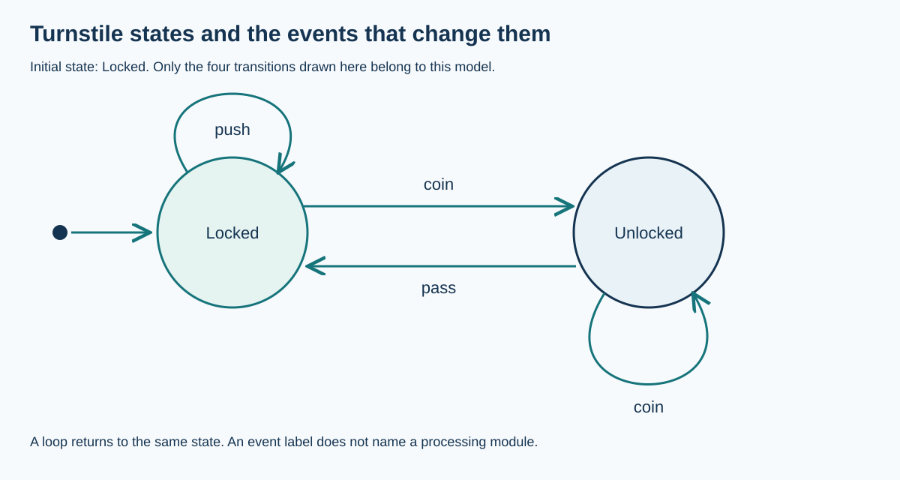

Document persistent states and transitions
S12.03.A01
Visual overview
A turnstile has two persistent states

Visual transcript
- Locked + coin → Unlocked.
- Locked + push → Locked.
- Unlocked + pass → Locked.
- Unlocked + coin → Unlocked.
Core explanation
States persist between events
A state-transition diagram documents the possible conditions of a system and the events that move it between those conditions. It helps a designer communicate behaviour that depends on the current state. An initial-state indicator tells the reader where an event sequence starts.
Transitions depend on current state and event
In the turnstile model, a coin unlocks a locked barrier and passing locks it again. A push while locked leaves it locked. A second coin while already unlocked leaves it unlocked. Each arrow is directed and labelled with an event; a self-loop represents an event that leaves the current state unchanged. More detailed diagrams may add conditions to an event label.